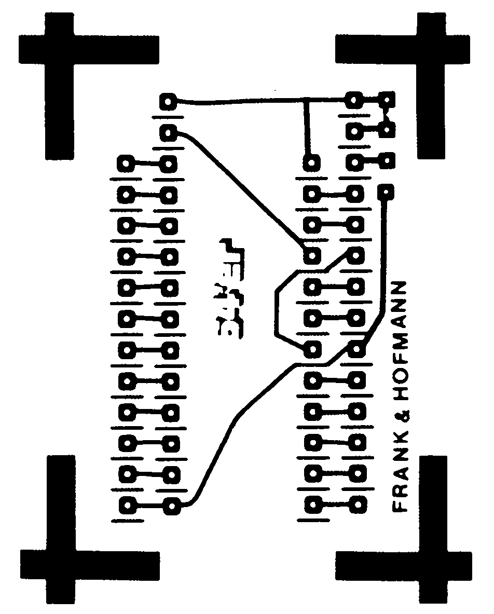
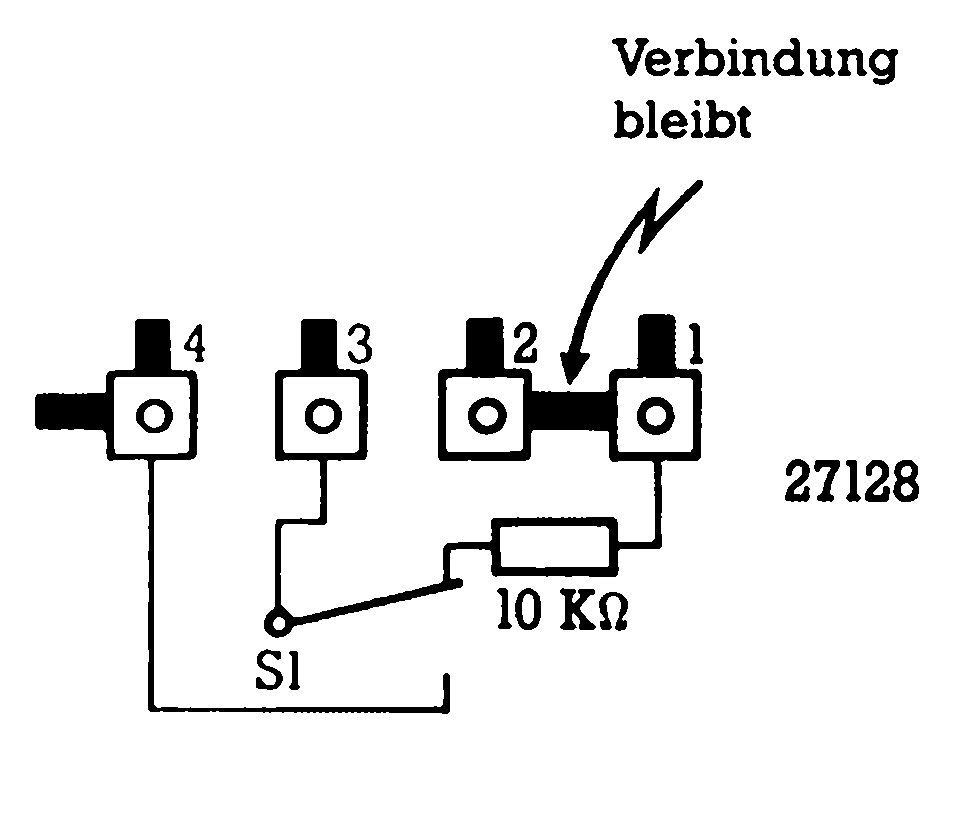
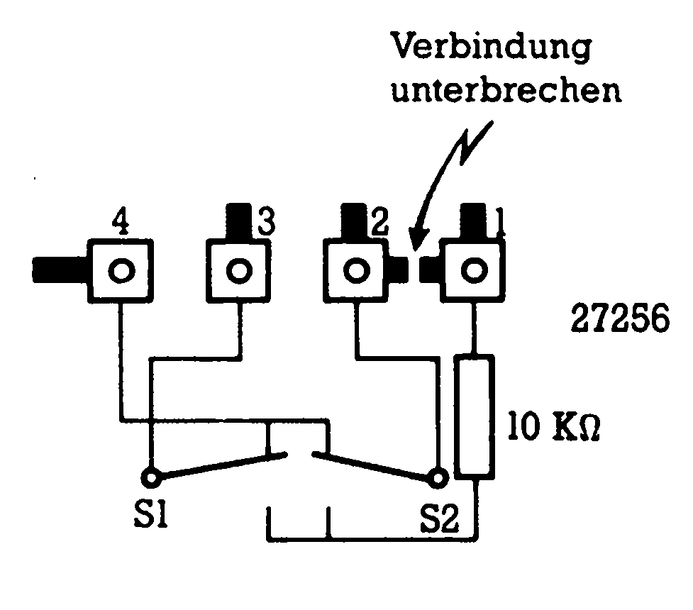
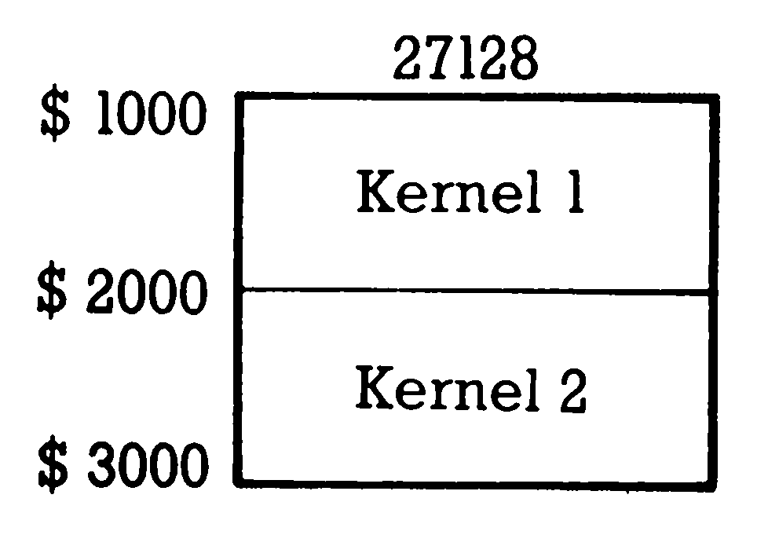
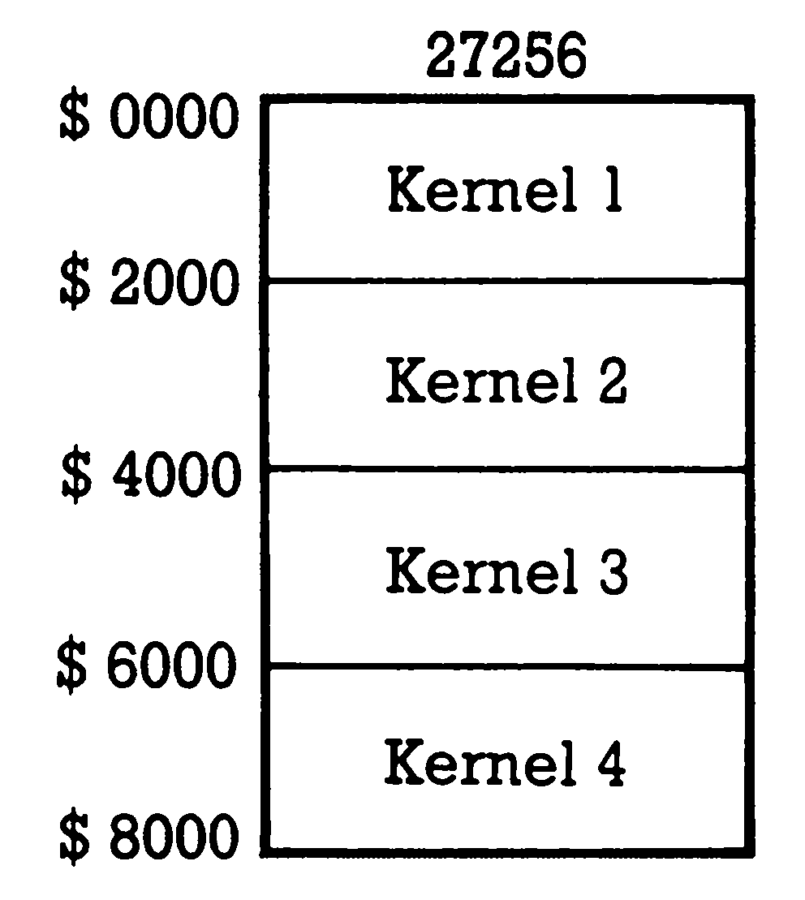

Quadrophonie im Betriebssystem
Bisher war es sehr aufwendig, mehrere Betriebssysteme im Computer unterzubringen. Mit einem Trick läßt sich der Aufwand um ein Vierfaches verringern.
Um gleichzeitig mehrere Betriebssysteme in den C 64 abrufbereit einzusetzen, wurde bislang eine Adapterplatine mit mehreren EPROM-Sockeln verwendet (zum Beispiel EPROM-Trans, 64’er 10/85, Seite 42). Die Herstellung solcher Platinen ist aufgrund ihres Umfanges recht zeitaufwendig und kompliziert.
Unser neuer Kernel-Adapter besteht aus einer kleinen und sehr einfachen Platine (Bild 1). Dabei können in einem großen EPROM mehrere Betriebssysteme gleichzeitig untergebracht werden. So lassen sich in einem EPROM des Typs 27256 (32 KByte) vier, und im nächstkleineren Typ 27128 (16 KByte) zwei Betriebssysteme unterbringen. Der Preis für ein solches EPROM liegt meist wesentlich unter 30 Mark. Um die Platine so einfach wie möglich zu halten, haben wir auf Flip-Flops für die Umschaltung des Betriebssystems verzichtet. Deshalb sollte nur bei ausgeschaltetem Computer umgeschalten werden, andernfalls wäre ein Systemabsturz unumgänglich. Für ein 16-KByte-EPROM brauchen Sie einen, für das 32-KByte-EPROM zwei Umschalter (1 x Um). Bild 2 zeigt den Anschluß des 27128, in Bild 3 finden Sie die Schaltungsvariante für den 27256. Bei Verwendung des 32-KByte-EPROMs muß die Leiterbahn zwischen Anschluß 1 und 2 an der vorgesehenen Stelle unterbrochen werden (Bild 3). Bei der Verschaltung darf auf keinen Fall der 10-KOhm-Widerstand zwischen dem Schalter und der Versorgungsspannung vergessen werden.



Die Betriebssysteme werden hintereinander auf das EPROM programmiert. In den Bildern 4 und 5 wird das Schema der EPROM-Belegung dargestellt.
Wie gesagt ist der Selbstbau der Adapterplatine sehr einfach. Sie benötigen nur die Bauteile aus der Stückliste (Bild 6).
| Zweifach-Kernel | Vierfach-Kernel |
| 1 Platine | 1 Platine (Anschluß 1 und 2 durchtrennen!) |
| 1 Schalter (1xUm) | 2 Schalter (je 1xUM) |
| 1 IC-Fassung (28polig) | 1 IC-Fassung (28polig) |
| 2 Pin-Leisten (je 12 Pins) | 2 Pin-Leisten (je 12 Pins) |
| 1 Widerstand $10 kΩ | 1 Widerstand $10 kΩ |
| 1 EPROM 27128 | 1 EPROM 27256 |
| 1 3poliges Flachbandkabel | 1 4poliges Flachbandkabel |
Zuerst werden die Pin-Leisten auf der Leiterbahnseite eingelötet, so daß die Platine später anstelle des KernelROMs in den Computer eingesetzt werden kann. Anschließend sollten Sie die 28polige IC-Fassung einlöten. Nun können Sie das entsprechende Flachbandkabel einlöten und mit dem (den) Schalter(n) verbinden. Vergessen Sie den 10-KOhm-Widerstand nicht! Vergleichen Sie anschließend alle Lötstellen, denn Kurzschlüsse können das Ende für den Computer bedeuten.
Ist die Platine fertig, sollte man die Betriebssysteme ins EPROM »brennen«. Dazu eignet sich unter anderem der 64’er EPROMmer (Ausgabe 12/85 und 1/86). Die Betriebssysteme müssen wie in Bild 4 oder 5 angeordnet werden.


Vor dem Umbau des C 64 ist unbedingt der Netzstecker zu ziehen! Lösen Sie die drei Schrauben an der Unterseite und heben Sie das Oberteil vorsichtig ab. Das Gehäuseoberteil wird nach Abstecken der Tastatur und der Leuchtdiode beiseite gelegt. Ist dies alles geschehen, ziehen Sie vorsichtig das Original-Kernel aus der Fassung (Steckplatz U4) und stecken die Platine mit der überstehenden Seite nach hinten zeigend (Richtung zum User-Port) in den C 64. Das EPROM wird ebenfalls mit der Kerbe nach hinten zeigend in die 28polige Fassung eingesetzt; die Kerbe im Sockel muß mit der Kerbe des EPROMs übereinstimmend im überstehenden Teil des Sockels liegen (Richtung zum User-Port). Die Schalter können nach Belieben am Computergehäuse befestigt werden.
Sollte Ihr Kernel-PROM eingelötet sein, lassen Sie bitte das IC von einem Fachmann durch eine 24polige Fassung ersetzen. Übernehmen Sie den Umbau selbst, so sollten Sie nach Möglichkeit eine Lötstation mit Trenntrafo verwenden.
Vorsicht! Durch Öffnen des C 64 oder durch irgendwelche Änderungen kann der Garantieanspruch verlorengehen.
(C. Q. Spitzner/M. Frank/og)